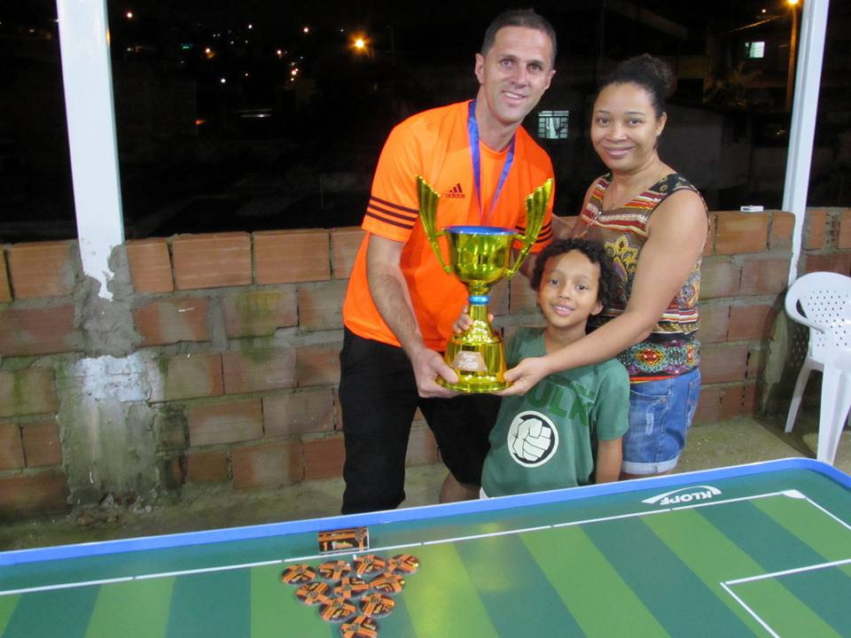

Confraternização da Família Vetor Norte
O primeiro churrascão do GRFMVN, foi um grande sucesso.
Família e amigos confraternizando, muita carne assando, bebida a gosto, bolo de aniversário (a primeira dama da Chape, Soraia soprou velinhas) e o mais importante, a bolinha rolando nas mesas.
A família Vetor Norte se mostra cada dia mais unida e em sintonia, essa é a receita de mais um ano de sucesso e crescimento do Grêmio Vetor Norte de Futmesa.

Mantendo a Hegemonia
O tão sonhado bi da "Recopa dos Campeões GRFMVN" não veio, mas isso não foi motivo para frustrar a equipe do Baleares e seu técnico Rodrigo Rubens, pois veio outro bi, o bicampeonato de regularidade ou da "Paleta de Ouro" como é batizado, que premia o melhor técnico do ano no Vetor Norte.
Além da Paleta de Ouro o Baleares ficou ainda com o bronze da Recopa e o vice campeonato do "Cartola GRFMVN" (jogo interativo). E recebeu também a réplica da taça "Wiking" por ter conquistado a Recopa dos Campeões em 2016.
Em 2018 o Baleares passará a có-patrocinar a "Taça SERP", ao lado do Real Palestra (Fábio), e a competição passará a ser chamada "Taça SERP - Baleares".
O Grêmio Vetor Norte parabeniza o Baleares pelas conquistas em 2018.
Gálatas incontestável
Um ano que começou promissor para o Gálatas FC (Leandro Miranda) com a conquista da "Taça SERP", fechou de forma excepcional na noite de sábado 09/12/17 com o título inédito e de forma invicta da "Recopa dos Campeões GRFMVN", principal competição do Grêmio Vetor Norte de Futmesa. De quebra o título veio em cima do seu principal rival (assim considerado pelo técnico Leandro).
Após uma campanha com 2 (duas) vitórias e 2 (dois) empates na primeira fase, o Gálatas se credenciou à final onde bateu o tradicional Soc. Ventura (Gleison Ventura) pelo placar de 2x1. O título que veio acompanhado da medalha de melhor defesa, como não poderia deixar de ser, foi muito comemorado pela família Miranda Branco.
O Grêmio Vetor Norte, parabeniza o Gálatas FC pelo título da Recopa dos Campeões GRFMVN.
O Caneco é Vascaíno
Água mole em pedra dura... quem espera sempre alcança e várias outras frases de efeito poderiam ser usadas para destacar a conquista inédita do Vasco da Gama (João Silvério) nesse sábado 09/12/17, mas apenas uma interessa para expressar o sentimento de dever cumprido... É campeão!!!
O tão sonhado primeiro título do Vasco nas mesas Vetorianas, veio na raça, após uma campanha de 2 (duas) vitórias, 1 empate e 1 (uma) derrota, o Vasco teria pela frente na final o seu algoz da primeira fase e dono da melhor campanha, o Ventura Jr (Raul Louzada).
O jogo se definiu na primeira etapa, onde o Vasco abriu a contagem em uma bobeada defensiva do Ventura Jr, mas não demorou muito e veio o empate em uma cobrança de falta perfeita do Ventura Jr. O gol que definiu o placar e fez o técnico João Silvério soltar o grito que estava preso na garganta ao final da partida, aconteceu em um chute da intermediária com uma rara precisão e que cobriu o goleiro estufando o barbante.
Final de jogo e o placar mostrou Ventura Jr 1x2 Vasco da Gama. João Silvério levou ainda o bi-campeonato do "Cartola GRFMVN" (jogo interativo) com o Oliveirense. O Grêmio Vetor Norte parabeniza o Vasco da Gama, primeiro campeão da Taça de Prata GRFMVN.
A Força da Família Ventura
Mantendo vivo o espírito e a paixão pelo futebol de mesa, os botonistas da família Ventura, Gleison Ventura (Soc. Ventura) e Raul Louzada (Ventura Jr), voltaram para casa com mais algumas conquistas na bagagem, mostrando que os Ventura continuam fortes no Vetor Norte.
Dentre as conquistas levaram: vice-campeonato, melhor ataque e melhor defesa da Taça de Prata com o Ventura Jr (Raul) e o Soc. Ventura (Gleison) ficou com o vice-campeonato e melhor ataque da Recopa dos Campeões, e ainda o bronze do "Cartola GRFMVN" (jogo interativo).
O Grêmio Vetor Norte parabeniza à família "Sociedade Ventura" pelas conquistas.
Vamo, Vamo Chapê
Com pouco tempo de paleta, mas se sentindo bem mais a vontade nas mesas do Vetor Norte, o técnico Antônio Rubens obteve sua primeira conquista com a Chapecoense Futmesa.
A colocação da medalha de bronze da "Taça de Prata GRFMVN" no peito, foi muito comemorada pela família Vetor Norte e o técnico sr Rubens deixou a promessa de lutar por mais conquistas em 2018.
O GRFMVN parabeniza a Chapecoense pela conquista do bronze da Taça de Prata.
Uma estreia promissora
A última competição do ano trouxe a grata estréia do mais novo sócio do GRFMVN. O Villa do técnico Edézio, estreou e bem nas mesas vetorianas chegando a brigar com a Chapecoense (Rubens), pelo terceiro lugar da Taça de Prata.
O GRFMVN dá as boas vindas ao Villa e seu técnico Edézio.
Textos Fabio Henrique.